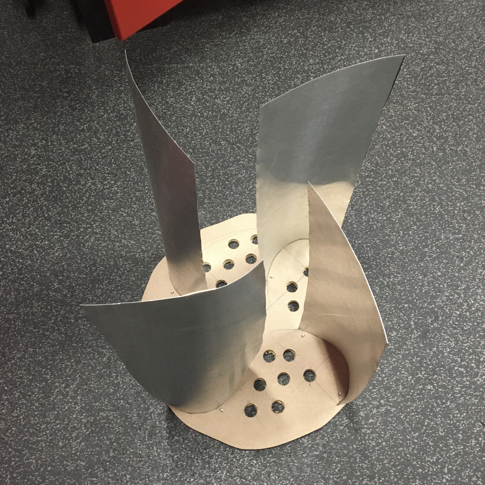
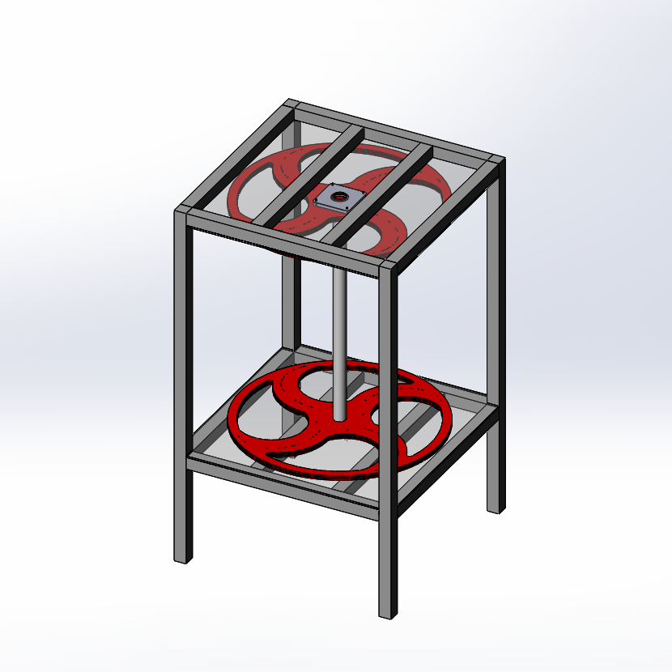

Pictures from various stages of turbine development (read more here). The first is the original plate with the blade curve, but it broke so I slightly changed it. It utilizes the Golden Spiral. Second row, third column is one of those moments where a shoddy decision turned out to have major benefits — I needed a way to couple the shaft to the generator, but I was having a hard time coming up with it. I bolted sheet metal to each part, and it helped because of the increased flexibility of the metal which decreases friction caused by the shaft pushing the red plate towards the wood. Third row, first column is independent rotation in low wind. Third row, second column is the top-view of the 3D model I made for a lift-based design. Third row, right and fourth row, left are 3D representations that I made as plans for what my final model could look like in SolidWorks, and the last two are how it actually turned out.
 Below, you can see all of the versions of the flipper (read more here). During online school, I couldn't stop thinking of ways to improve the design from home, so I downloaded Solidworks at home and made the fourth image, which is a simpler, treadless flipper. The red one is what remains of our failed first print which helped us realize we should make it in parts. The last one is a mockup of how treads would fit on the flipper.